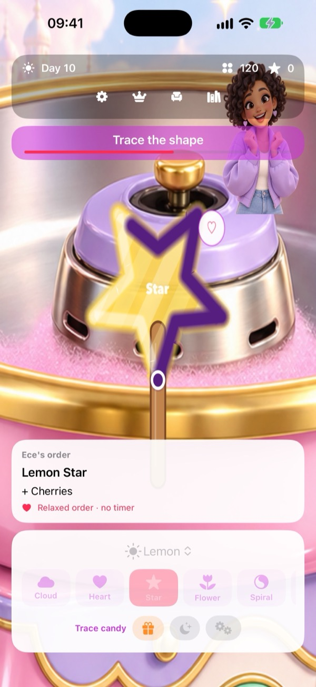
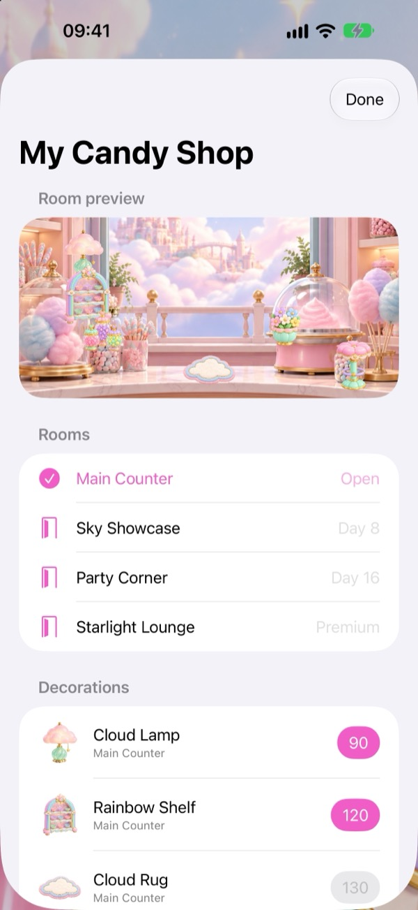
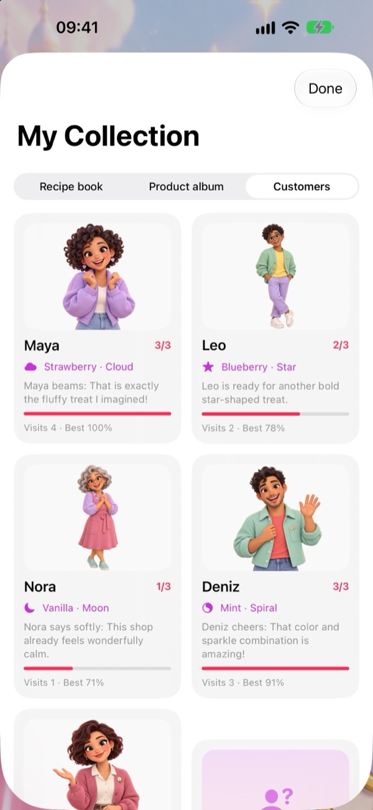

Spin it. Shape it. Make it yours.
Discover new recipes with 8 flavors, 10 shapes, and colorful toppings.
Mix colors, spin fluffy creations, and make a pastel shop your own. Every order is a little work of you.
Step inside the shop ↗
Discover new recipes with 8 flavors, 10 shapes, and colorful toppings.
Use the coins you earn in play to choose decorations and upgrade your machine.
Learn six customers’ favorites and keep your creations in your album.


The children’s edition has no ads or third-party tracking SDKs. Purchases, external links, and sharing sit behind a parent check.
Premium is an optional annual, auto-renewing subscription. While active, it doubles daily rewards and unlocks the Starlight Lounge and its decorations. Free play is ad-free too.
Read our privacy policy →